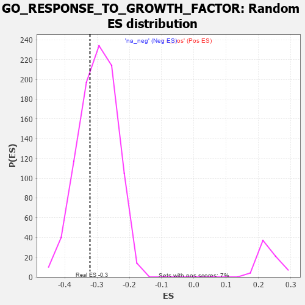

| | | Dataset | 7d |
| Phenotype | NoPhenotypeAvailable |
| Upregulated in class | na_neg |
| GeneSet | GO_RESPONSE_TO_GROWTH_FACTOR |
| Enrichment Score (ES) | -0.32194287 |
| Normalized Enrichment Score (NES) | -1.0753391 |
| Nominal p-value | 0.33619764 |
| FDR q-value | 0.7820776 |
| FWER p-Value | 1.0 |
Table: GSEA Results Summary
 Fig 1: Enrichment plot: GO_RESPONSE_TO_GROWTH_FACTOR
Fig 1: Enrichment plot: GO_RESPONSE_TO_GROWTH_FACTOR
Profile of the Running ES Score & Positions of GeneSet Members on the Rank Ordered List
| PROBE | GENE SYMBOL | GENE_TITLE | RANK IN GENE LIST | RANK METRIC SCORE | RUNNING ES | CORE ENRICHMENT | | 1 | TGFB3 | | | 49 | 2.654 | 0.0287 | No |
| 2 | HTRA4 | | | 137 | 1.341 | 0.0352 | No |
| 3 | SMAD5 | | | 231 | 0.979 | 0.0362 | No |
| 4 | HGF | | | 276 | 0.870 | 0.0421 | No |
| 5 | DLL1 | | | 337 | 0.760 | 0.0444 | No |
| 6 | ARNT | | | 357 | 0.741 | 0.0518 | No |
| 7 | RGMB | | | 368 | 0.732 | 0.0601 | No |
| 8 | HTRA2 | | | 527 | 0.621 | 0.0481 | No |
| 9 | PITX3 | | | 594 | 0.596 | 0.0475 | No |
| 10 | MCM7 | | | 612 | 0.591 | 0.0531 | No |
| 11 | HES5 | | | 661 | 0.571 | 0.0545 | No |
| 12 | FST | | | 698 | 0.560 | 0.0573 | No |
| 13 | ID1 | | | 719 | 0.555 | 0.0620 | No |
| 14 | ELK1 | | | 752 | 0.545 | 0.0651 | No |
| 15 | NLK | | | 911 | 0.504 | 0.0516 | No |
| 16 | PDCD4 | | | 941 | 0.497 | 0.0544 | No |
| 17 | ZPR1 | | | 967 | 0.491 | 0.0577 | No |
| 18 | MEN1 | | | 1003 | 0.483 | 0.0596 | No |
| 19 | AKT1 | | | 1040 | 0.476 | 0.0612 | No |
| 20 | MEF2C | | | 1054 | 0.473 | 0.0658 | No |
| 21 | SRC | | | 1128 | 0.459 | 0.0625 | No |
| 22 | FIBP | | | 1129 | 0.458 | 0.0685 | No |
| 23 | GAB1 | | | 1158 | 0.453 | 0.0709 | No |
| 24 | P2RY1 | | | 1416 | 0.407 | 0.0435 | No |
| 25 | PTBP1 | | | 1441 | 0.402 | 0.0457 | No |
| 26 | VASN | | | 1459 | 0.398 | 0.0487 | No |
| 27 | SOS1 | | | 1547 | 0.384 | 0.0427 | No |
| 28 | FZD1 | | | 1574 | 0.379 | 0.0443 | No |
| 29 | ESRP1 | | | 1653 | 0.364 | 0.0392 | No |
| 30 | WWOX | | | 1688 | 0.359 | 0.0396 | No |
| 31 | STRAP | | | 1793 | 0.339 | 0.0307 | No |
| 32 | GATA4 | | | 1837 | 0.330 | 0.0296 | No |
| 33 | SMAD4 | | | 1860 | 0.326 | 0.0311 | No |
| 34 | NEO1 | | | 1879 | 0.323 | 0.0330 | No |
| 35 | RAF1 | | | 2011 | 0.303 | 0.0203 | No |
| 36 | MEIS2 | | | 2063 | 0.296 | 0.0176 | No |
| 37 | KCNC2 | | | 2075 | 0.295 | 0.0201 | No |
| 38 | FOXD1 | | | 2093 | 0.292 | 0.0218 | No |
| 39 | BMP7 | | | 2107 | 0.290 | 0.0239 | No |
| 40 | CREB1 | | | 2243 | 0.269 | 0.0102 | No |
| 41 | WASF1 | | | 2303 | 0.259 | 0.0061 | No |
| 42 | CDC5L | | | 2353 | 0.253 | 0.0032 | No |
| 43 | NCBP2 | | | 2383 | 0.248 | 0.0027 | No |
| 44 | PELO | | | 2386 | 0.247 | 0.0057 | No |
| 45 | HIPK2 | | | 2389 | 0.247 | 0.0087 | No |
| 46 | FRS3 | | | 2482 | 0.229 | -0.0000 | No |
| 47 | HAS1 | | | 2722 | 0.195 | -0.0280 | No |
| 48 | SLIT2 | | | 2724 | 0.195 | -0.0255 | No |
| 49 | FNTA | | | 2755 | 0.190 | -0.0269 | No |
| 50 | FER | | | 2803 | 0.183 | -0.0305 | No |
| 51 | SYAP1 | | | 2811 | 0.182 | -0.0290 | No |
| 52 | PDCD5 | | | 2885 | 0.169 | -0.0361 | No |
| 53 | FGFR2 | | | 2895 | 0.167 | -0.0350 | No |
| 54 | ACVR1 | | | 2932 | 0.161 | -0.0375 | No |
| 55 | WNT4 | | | 3023 | 0.146 | -0.0471 | No |
| 56 | LEF1 | | | 3037 | 0.144 | -0.0468 | No |
| 57 | FEZ1 | | | 3055 | 0.142 | -0.0471 | No |
| 58 | SFRP5 | | | 3154 | 0.129 | -0.0580 | No |
| 59 | GCNT2 | | | 3162 | 0.128 | -0.0572 | No |
| 60 | SMAD3 | | | 3303 | 0.105 | -0.0737 | No |
| 61 | SMAD1 | | | 3337 | 0.099 | -0.0766 | No |
| 62 | UBE2O | | | 3348 | 0.097 | -0.0766 | No |
| 63 | TAB1 | | | 3351 | 0.097 | -0.0756 | No |
| 64 | SMAD7 | | | 3369 | 0.093 | -0.0765 | No |
| 65 | MED1 | | | 3405 | 0.089 | -0.0798 | No |
| 66 | PTPRK | | | 3454 | 0.084 | -0.0849 | No |
| 67 | HGS | | | 3476 | 0.080 | -0.0865 | No |
| 68 | PIN1 | | | 3543 | 0.069 | -0.0940 | No |
| 69 | FUT8 | | | 3551 | 0.067 | -0.0940 | No |
| 70 | PARD3 | | | 3584 | 0.063 | -0.0973 | No |
| 71 | MAPK3 | | | 3589 | 0.062 | -0.0970 | No |
| 72 | CBL | | | 3621 | 0.056 | -0.1002 | No |
| 73 | EPN2 | | | 3691 | 0.045 | -0.1084 | No |
| 74 | SKI | | | 3762 | 0.032 | -0.1169 | No |
| 75 | PPM1A | | | 3953 | 0.002 | -0.1412 | No |
| 76 | PARP1 | | | 4014 | -0.010 | -0.1487 | No |
| 77 | SFRP2 | | | 4065 | -0.018 | -0.1549 | No |
| 78 | WNT2 | | | 4084 | -0.021 | -0.1569 | No |
| 79 | PDE8A | | | 4097 | -0.023 | -0.1581 | No |
| 80 | ABL1 | | | 4125 | -0.027 | -0.1612 | No |
| 81 | CRK | | | 4139 | -0.031 | -0.1625 | No |
| 82 | GPC1 | | | 4238 | -0.048 | -0.1744 | No |
| 83 | BAG4 | | | 4314 | -0.061 | -0.1831 | No |
| 84 | CD109 | | | 4325 | -0.064 | -0.1836 | No |
| 85 | ILK | | | 4510 | -0.096 | -0.2058 | No |
| 86 | SNW1 | | | 4514 | -0.096 | -0.2049 | No |
| 87 | NPTN | | | 4519 | -0.098 | -0.2042 | No |
| 88 | NTRK2 | | | 4543 | -0.104 | -0.2057 | No |
| 89 | SNX25 | | | 4606 | -0.119 | -0.2121 | No |
| 90 | GATA3 | | | 4614 | -0.120 | -0.2114 | No |
| 91 | FGFR3 | | | 4656 | -0.129 | -0.2149 | No |
| 92 | ARPC3 | | | 4659 | -0.129 | -0.2135 | No |
| 93 | ARF6 | | | 4704 | -0.140 | -0.2173 | No |
| 94 | PLCG1 | | | 4770 | -0.151 | -0.2236 | No |
| 95 | RAB14 | | | 4784 | -0.155 | -0.2232 | No |
| 96 | FZD4 | | | 4940 | -0.186 | -0.2406 | No |
| 97 | EP300 | | | 4941 | -0.186 | -0.2381 | No |
| 98 | KLF4 | | | 5005 | -0.198 | -0.2436 | No |
| 99 | PDPK1 | | | 5043 | -0.207 | -0.2456 | No |
| 100 | FLCN | | | 5140 | -0.235 | -0.2547 | No |
| 101 | TBX1 | | | 5166 | -0.241 | -0.2548 | No |
| 102 | HDAC6 | | | 5183 | -0.244 | -0.2536 | No |
| 103 | PTEN | | | 5262 | -0.261 | -0.2601 | No |
| 104 | MAGI2 | | | 5295 | -0.269 | -0.2607 | No |
| 105 | FKBP8 | | | 5296 | -0.270 | -0.2571 | No |
| 106 | FGFR1 | | | 5543 | -0.332 | -0.2842 | No |
| 107 | EHD1 | | | 5560 | -0.336 | -0.2818 | No |
| 108 | SPHK1 | | | 5576 | -0.339 | -0.2792 | No |
| 109 | ROR2 | | | 5626 | -0.353 | -0.2809 | No |
| 110 | CD63 | | | 5680 | -0.370 | -0.2828 | No |
| 111 | TIA1 | | | 5731 | -0.386 | -0.2841 | No |
| 112 | STK11 | | | 5922 | -0.443 | -0.3025 | No |
| 113 | USP9Y | | | 6075 | -0.498 | -0.3154 | Yes |
| 114 | FBN1 | | | 6080 | -0.499 | -0.3093 | Yes |
| 115 | UBB | | | 6090 | -0.503 | -0.3039 | Yes |
| 116 | ROCK1 | | | 6152 | -0.520 | -0.3048 | Yes |
| 117 | EGR1 | | | 6165 | -0.527 | -0.2994 | Yes |
| 118 | INSR | | | 6204 | -0.538 | -0.2972 | Yes |
| 119 | SMAD2 | | | 6216 | -0.541 | -0.2915 | Yes |
| 120 | EHD4 | | | 6227 | -0.545 | -0.2855 | Yes |
| 121 | SOX2 | | | 6477 | -0.652 | -0.3088 | Yes |
| 122 | ROBO1 | | | 6577 | -0.699 | -0.3122 | Yes |
| 123 | TPR | | | 6597 | -0.709 | -0.3053 | Yes |
| 124 | LTBP2 | | | 6600 | -0.712 | -0.2962 | Yes |
| 125 | EGFR | | | 6708 | -0.765 | -0.2998 | Yes |
| 126 | ADAM9 | | | 6808 | -0.819 | -0.3017 | Yes |
| 127 | GIPC1 | | | 6819 | -0.826 | -0.2921 | Yes |
| 128 | LRP8 | | | 6931 | -0.889 | -0.2946 | Yes |
| 129 | FAT4 | | | 6948 | -0.901 | -0.2847 | Yes |
| 130 | PDE2A | | | 6985 | -0.927 | -0.2771 | Yes |
| 131 | DDC | | | 7019 | -0.950 | -0.2688 | Yes |
| 132 | NR4A1 | | | 7022 | -0.951 | -0.2566 | Yes |
| 133 | DDX5 | | | 7152 | -1.037 | -0.2594 | Yes |
| 134 | OVOL2 | | | 7197 | -1.068 | -0.2509 | Yes |
| 135 | CIB1 | | | 7280 | -1.152 | -0.2463 | Yes |
| 136 | MSX2 | | | 7299 | -1.171 | -0.2331 | Yes |
| 137 | UBC | | | 7410 | -1.274 | -0.2304 | Yes |
| 138 | LHX1 | | | 7431 | -1.305 | -0.2158 | Yes |
| 139 | SHOC2 | | | 7546 | -1.463 | -0.2111 | Yes |
| 140 | PDCD6 | | | 7630 | -1.615 | -0.2004 | Yes |
| 141 | CASP3 | | | 7747 | -1.902 | -0.1902 | Yes |
| 142 | KCNC1 | | | 7835 | -2.249 | -0.1717 | Yes |
| 143 | DLX5 | | | 7845 | -2.378 | -0.1415 | Yes |
| 144 | FYN | | | 7881 | -2.622 | -0.1115 | Yes |
| 145 | CAV3 | | | 7896 | -2.739 | -0.0772 | Yes |
| 146 | FBN2 | | | 7906 | -2.873 | -0.0405 | Yes |
| 147 | XIAP | | | 7947 | -3.696 | 0.0031 | Yes |
Table: GSEA details [plain text format]

Fig 2: GO_RESPONSE_TO_GROWTH_FACTOR: Random ES distribution
Gene set null distribution of ES for GO_RESPONSE_TO_GROWTH_FACTOR